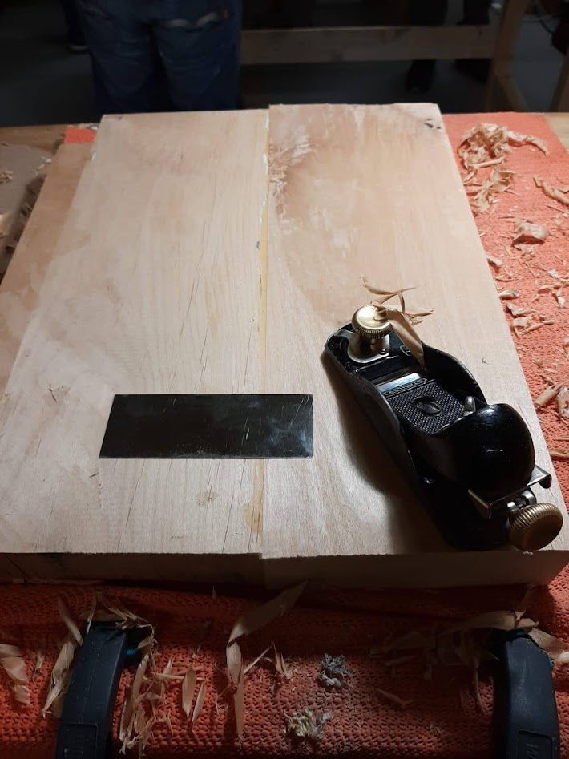
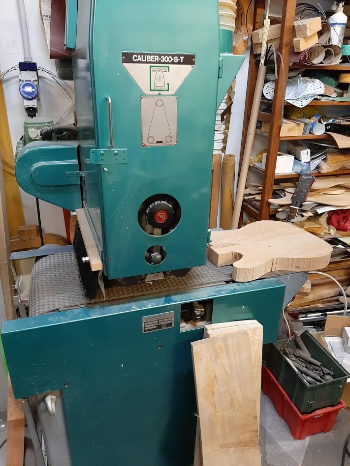
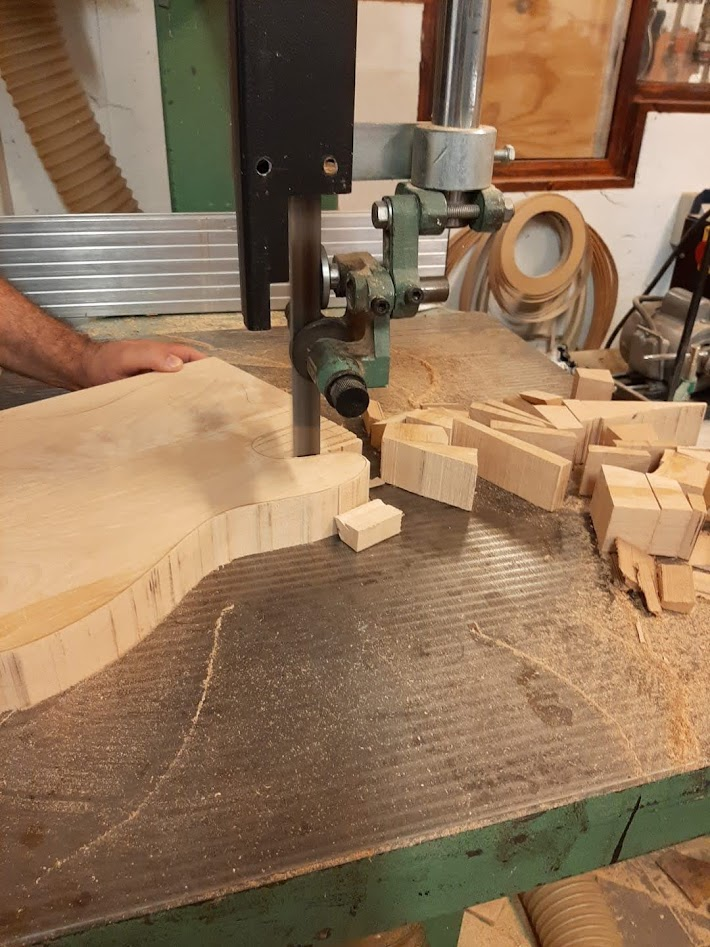
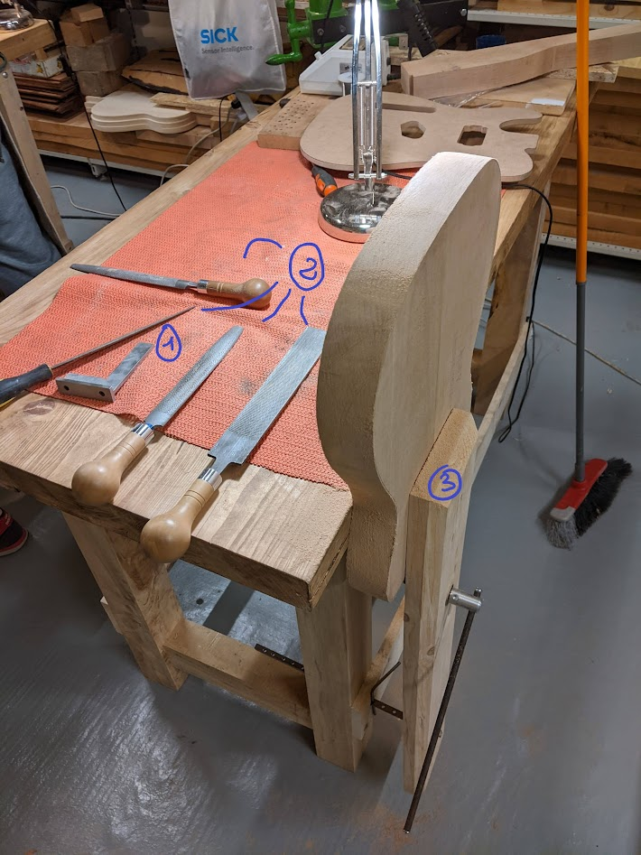
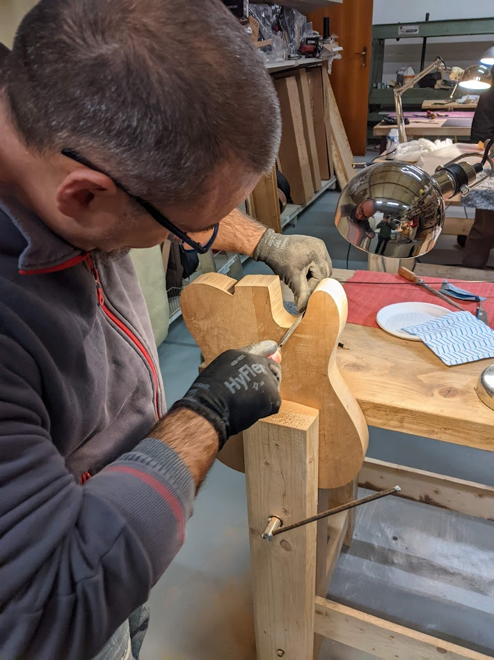
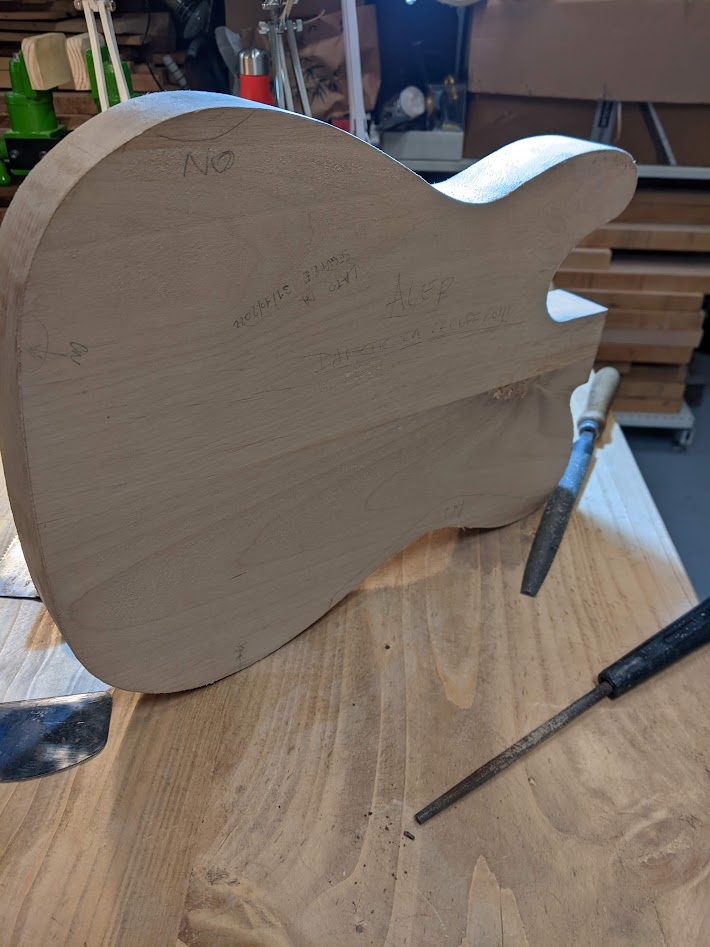

Rasp that or die!
Insomma tutto l’entusiasmo iniziale si è subito affievolito dopo aver passato giorni ad usare le raspe. E non è ancora finita… ma andiamo con ordine.

Tracciamento del contorno e prima sgrossatura
Una volta che la colla si è asciugata si passa a rimuovere i residui dell’incollaggio. In questa lavorazione si può usare sia una rasiera, attrezzo molto usato in liuteria, che un pialletto affilato. Con la rasiera si riesce certamente ad asportare in maniera molto accurata, tuttavia il materiale asportabile è pochissimo. L’ho usata infatti specialmente nella linea del giunto dove i residui di colla sono più pronunciati.

Con il pialletto si fa una prima livellata, almeno ad una delle due facce. L’operazione di livellamento delle facce è molto importante e se fatta a mano può richiedere parecchio tempo e precisione. Piallare a mano per molti è un esercizio zen, che rilassa spirito e corpo, non la penso allo stesso modo, ma capisco la soddisfazione quando si producono quei riccioli di legno quasi trasparenti. Tuttavia, nella nostra applicazione, la fase di calibratura dello spessore è avvenuta tramite una macchina dedicata, una levigratrice a nastro, in grado di piallare (piccoli spessori) e levigare.


Dopo queste operazioni si passa a scontornare in modo grossolano dando una prima forma al body. Per fare prima Marco ha usato la sega a nastro, in alternativa si può usare anche un seghetto alternativo o una sega giapponese.
In foto si nota come sia importante tagliare il più vicino possibile al contrno, proprio per limitare le operazioni di sgrossatura con la raspa, e vi garantisco che non è per niente facile.
Sgrossatura di precisione con la raspa
E qui arriva il momento in cui ho (quasi) mandato in vacca il progetto, già dall’inzio. In questa fase, che poi è la prima lavorazione fatta da me, ho fatto molti errori, dettati da inesperienza, fretta e frustazione. L’obiettivo della lavorazione è quello di asportare più materiale possibile fino al contorno tracciato a matita, mantenendo SEMPRE la perpendicolarità della costa con le facce.

L’attrezzatura necessaria in questa fase è composta essenzialmente da:
Squadretta da meccanica. Quella in foto l’ho comprata su amazon a circa 20€. La squadra è fondamentale in questa lavorazione, e anche nelle successive, tanto che ne è suggerito l’acquisto a chi frequenta il corso.
Raspe. Generalmente le raspe hanno due facce, una piatta che permette di andare più veloci nei tratti poco curvi, l’altra, stondata, che serve invece nei punti a maggiore curvatura.
Morsa a gamba. Attrezzo da non sottovalutare. Se il pezzo non è saldamente fermo e solidale con il banco non si riesce a lavorare. Ho visto in rete soluzioni alternative, con T-track e morsetti, ma la soluzione più efficace è avere un bel banco pesante e una morsa a gamba, molto comune nei banchi di falegnameria tradizionale.

Imparare ad usare la raspa non è stato per niente facile. Richiede parecchia attenzione e precisione, assieme anche ad una postura comoda. Bisogna, infatti, asportare materiale tenendo sempre la raspa il più possibile parallela alla faccia che si sta lavorando. Aiutandosi con l’altra mano (v. foto ⬆️) e con un po’ di esercizio si riesce, ma è necessario sempre controllare con l’avanzamento della lavorazione la perpendicolarità con il davanati e il dietro (be a square, don’t be there).
All’inizio non mi erano chiari i movimenti da fare e tendevo inconsapevolmente ad asportare sempre dallo stesso lato. Mi sembrava assurdo dover controllare con la squadretta ogni 3x2, e invece era proprio la mancanza di controlli ripetuti che mi ha fregato. Ci vuole molta pazienza: bisogna asportare pochi decimi di mm e controllare, ed avanzare man mano, asportare poco, controllare e così via, su tutto (TUTTO!) il contorno.

Il pasticcio nella prima fase della lavorazione mi ha costretto a dover invertire la faccia che avevo preso a riferimento, ritracciare a matita il contorno, spostandolo di qualche mm rispetto al tracciamento precedente e, una volta verificato che il contorno stesse all’interno dei confini del pezzo, riniziare da capo. Per evitare di ripetere l’errore fatto all’inzio in alcune zone ho segnato a matita (con un “NO”, v. foto ⬆️) le parti che non dovevo assolutaente toccare perché ero già arrivato al filo del contorno.
Insomma, alla fine verificando la forma con la dima ci sono differenze sostanziali, forse 1 mm o più in alcune zone. Una differenza che non si vede sicuramente a distanza, ma che per un liutaio sono uno spillo in un occhio.
Il risultato allo stato attuale è che alla fine sarà una tele veramente, diciamo così, “custom” (eufemismo per appellare una robaccia). La chiamerò anti-caster, cioè una anti chitarra, una non fender, la mia nemesi: è il castigo per aver avuto fretta in un lavoro che richiede una calma estrema, una pazienza zen e molta, molta attenzione ai dettagli.
La raspa sarà un attrezzo fondamentale in tutto il corso, la ritroveremo sicuramente nella lavorazione del manico, si spera che per le prossime volte il minimo di esperienza accumulata servirà a non commettere gli stessi errori.